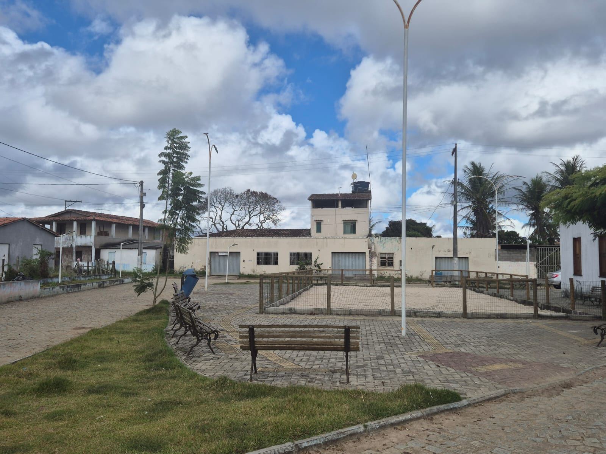
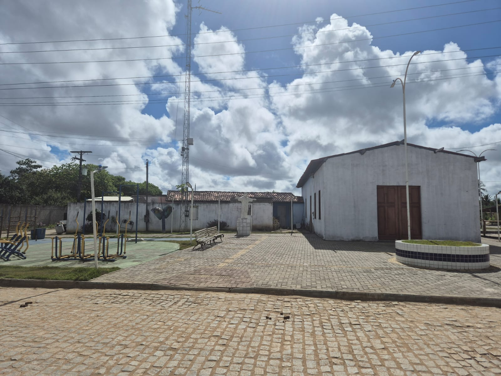
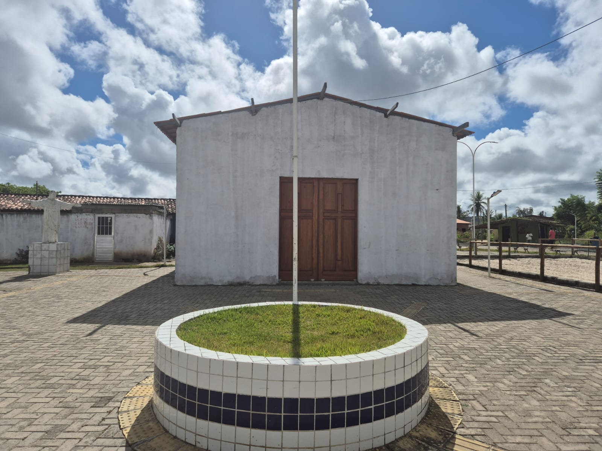
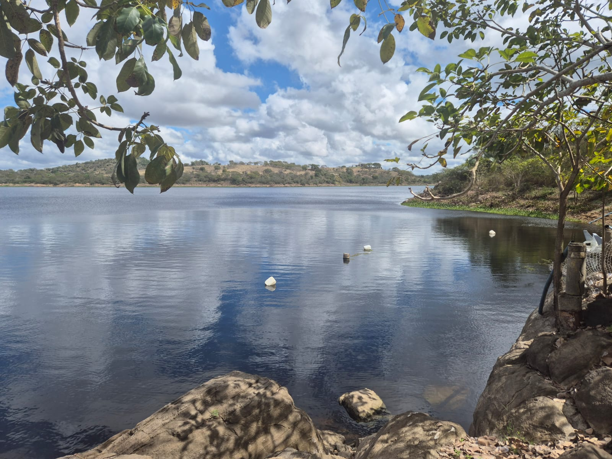
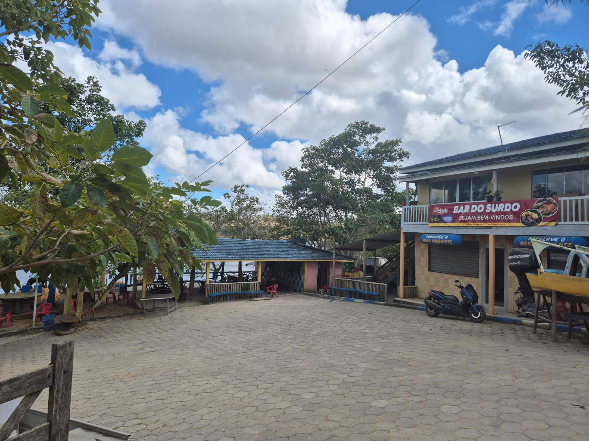
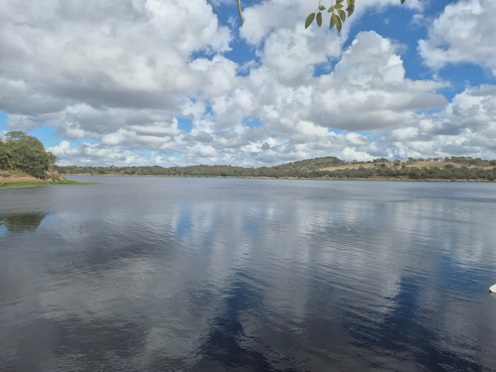

O largo
Espaço de encontro e pista para investigar sociabilidades e festas.

Nossa primeira visita revelou uma comunidade que pode ajudar a compreender diferentes dimensões da história de Conceição da Feira. O largo, a igreja, as festas, o rio Jacuípe e os caminhos para a outra margem são pontos de partida para investigar religiosidade, circulação, trabalho, comércio, pesca e relações entre comunidades.
Mais do que apresentar uma história pronta, registramos o que encontramos e as perguntas que surgiram da visita.

Espaço de encontro e pista para investigar sociabilidades e festas.

Um ponto para pesquisar santos, devoções, festas e memórias religiosas.

O rio aparece como caminho de trabalho, travessia e relações entre margens.

Onde encontramos uma primeira memória sobre comércio, festas e travessias.
O largo e a igreja ocupam lugar de destaque na paisagem. Queremos investigar quais festas religiosas são realizadas no Candeal, quais santos são celebrados, como essas festas se transformaram, quem participa de sua organização e que lembranças os moradores guardam de outros períodos.
Fotografias, santinhos, cartazes, programas de festas e acervos familiares poderão ajudar a construir essa história.

No trecho visitado, o Jacuípe já está próximo de seu encontro com o Paraguaçu. Os primeiros relatos sugerem investigá-lo não apenas como limite territorial, mas como caminho: lugar de travessias, pesca, comércio, festas e relações entre pessoas das duas margens.
O rio separava ou conectava?
Queremos investigar de que maneira o Jacuípe participou das relações sociais e econômicas de Conceição da Feira e aproximou moradores do município e de Antônio Cardoso.
Durante a visita, conversamos com Antônio, conhecido como Surdo. Segundo seu relato, seu pai comercializava entre as feiras de Conceição da Feira e Antônio Cardoso, comprando e vendendo produtos.
Surdo também relatou a permanência das travessias do rio. Segundo ele, moradores de Conceição da Feira participam da festa de São Roque, em Antônio Cardoso, e parte dessas pessoas atravessa o Jacuípe em uma balsa que ele próprio conduz.
O relato é um primeiro indício. Queremos ouvir outras pessoas e compreender como comércio, festas, trabalho, pesca e relações familiares conectaram historicamente as duas margens.
Esta conexão apareceu em um relato colhido durante a visita. Novas entrevistas poderão revelar lugares da travessia, trajetos para as feiras, áreas de pesca, festas e redes familiares.
Como era feita a travessia do Jacuípe em outros períodos?
Quem realizava essas travessias?
Quais produtos circulavam entre as feiras?
Qual foi e qual é a importância da pesca?
Quais festas levam moradores de uma margem à outra?
Quais são as festas e devoções do próprio Candeal?
Que fotografias, objetos e histórias os moradores conservam?
Se você mora ou morou no Candeal, atravessou o Jacuípe, pescou no rio, participou das festas, frequentou as feiras de Conceição da Feira ou Antônio Cardoso, ou guarda fotografias e objetos relacionados a essas experiências, sua memória pode contribuir para esta pesquisa.